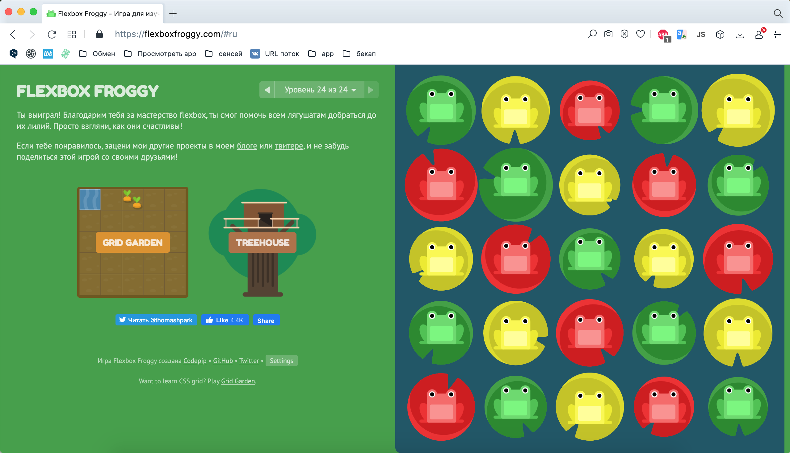

Привет! Меня зовут Ирина Куликова
Давай ответим на вопросы домашки по пятой недели.
PS. Это не окончательный layout ...
21.06 - 27.06 2021
Игра Flexbox Froggy
Ответы на вопросы
1. Почему в большинстве ситуаций стоит использовать flexbox-позиционирование?
Ответ
- можно очень просто и гибко расставить элементы в контейнере
- позволяет гораздо проще создавать адаптивный дизайн
- является самым простым и удобным вариантом создания позиционирования
- официально рекомендованный W3C вариант для позиционирования элементов
2. Самостоятельно изучите способ позиционирования через display: table и ответьте на вопрос, для каких ситуаций оно лучше всего подходит?
Ответ
CSS-свойство display: table и другие, делают вывод группы элементов подобно
таблице <table>, но с ограничением – объединения ячеек colspan и rowspan не
поддерживаются.
Со времен табличной верстки в html и css появилось множество
улучшений, которые заменяют ее собой. Проблема табличной верстки в том, что с ней не
добиться адаптивности (или весьма тяжело добиться). При изменении содержимого какой либо
ячейки происходит пересчет всей
таблицы (расходует ресурсы). Табличную верстку сложнее поддерживать.
Таким образом использовать верстку на основе таблиц не рационально.
Таблицы лучше использовать по их прямому назначению - для отображения таблиц. Табличную верстку можно применять, например, при печати странички.
Пример таблицы
3. Какими способами можно сделать горизонтальное выравнивание по центру? Минимум 3 варианта, можно больше
Ответ
Если элемент блочный - с помощью свойства margin: 0 auto;
Для строчных элементов - свойство text-align: center;
Для блочных с использованием Flexbox - justify-content: center;
Для центрирования по горизонтали блочных элементов можно для контейнера указать
text-align: center;, а для блоков display: inline-block;
4. Какие есть оси во флекс-верстке и как задается их направление?
Ответ
Главная ось - направление слева направо. Поперечная ось - направление сверху вниз.
5. Разберитесь, как работает свойство margin: auto во
флекс-верстке, приведите пример использования
Ответ
Если применить автоматические внешние отступы на flex-элементе, то этот элемент
автоматически заберет в отступ все дополнительное свободное пространство контейнера, в
зависимости от направления, в котором применяется auto-margin.
Например, если контейнеру задать параметр flex, а дочернему элементу
margin: auto;, то элемент будет отцентрован по вертикали и горизонтали так, что
центровка сохранится при
изменении размеров элемента или контейнера
Block child
6. В чем преимущества box-sizing?
Ответ
При установке размеров блока, помимио заданных размеров, добавляются размеры отступов
(margin и padding) и размер border. Реальная
ширина элемента увеличивается, что создает трудности при верстке страници и расположения
элементов.
Для изменения модели пожчета размера элемента используется свойство box-sizing
Значение по умолчанию - content-box
Для изменения расчета размера блока используется значение border-box. Любые
значения свойств border или padding включаются
внутрь width и height элемента.
Значение margin не учитыватся.
7. Чем отличается flex-grow от flex-shrink?
Ответ
Свойство flex-grow - определяет возможность элемента увеличиваться в размере,
при необходимости заполняя весь flex-контейнер.
Свойство flex-shrink - определяет возможность элемента уменьшаться в размере,
при необходимости заполняя весь flex-контейер.
Принимает значения 0 и 1: 0 запрещено, 1 разрешено.
8. Какими способами можно сделать горизонтальное выравнивание по центру? Минимум 3 варианта, можно больше
Ответ
Родителю задаем свойства: display: flex;,
justify-content: space-between;, align-items: center;
9. Какой в итоге будет размер у элемента (можно округлить)?
Ответ:
width : 1.989 + 5 + 134.545 + 5 + 1.989 = 148,52 px
height: 1.989 + 2 + 11.818 + 2 = 17,81 px
Размеры блока: 148,52 X 17,81
10. Самостоятельно разберитесь, зачем нужно свойство order?
Ответ
Cвойство order определяет порядок, используемый для размещения элементов в
контейнере. Элементы располагаются в восходящем порядке по значению order. Элементы с
одинаковым значением order располагаются в том порядке, в каком они находятся в исходном
коде.
Число может быть положительным и отрицательным и влияет на направления отсчета. Положительное число - по направленю оси, отрицательное - в противоположную сторону.
Например, если элементы расположены горизонтально, в зависимости от значения свойства
order (напр., order: 3; ), позиция самого элемента также будет
учитываться в отсчете.
11. Каким кодом можно сделать такую таблицу?
Ответ
Такую таблицу можно создать при помощи элемента <table></table>, который
является контейнером для элементов таблицы и все элементы должны находиться внутри него.
| Column 1 | Column 2 | Column 3 |
|---|---|---|
| Row 1 Cell 1 | Row 1 Cell 2 | Row 1 Cell 3 |
| Row 2 Cell 2 | Row 2 Cell 3 | |
| Row 3 Cell 1 | ||
12. Изучите материалы и найдите, для каких ситуаций подходит position: fixed?
Ответ
Фиксированное позиционирование элемента задаётся значением fixed свойства
position и по
своему действию похоже на абсолютное позиционирование. Но в отличие от него привязывается к
указанной свойствами left, top, right и
bottom точке на экране и не меняет своего положения
при прокрутке веб-страницы.
Применяется такой тип позиционирования для создания меню, вкладок, заголовков, в общем, любых элементов, которые должны быть закреплены на веб-странице и всегда видны посетителю.
13. Каким способом лучше всего верстать большие блоки текста?
Ответ
Большие блоки текста лучше верстать с помощью блочной модели позиционирования.
14. Как рассчитывается размер flex-контейнера?
Ответ
Размер контейнера состоит из размеров flex-элементов, которые рассчитываются как в обычной
блочной модели (рамки + отступы + размеры содержания) и значений свойств:
flex-grow и flex-shrink